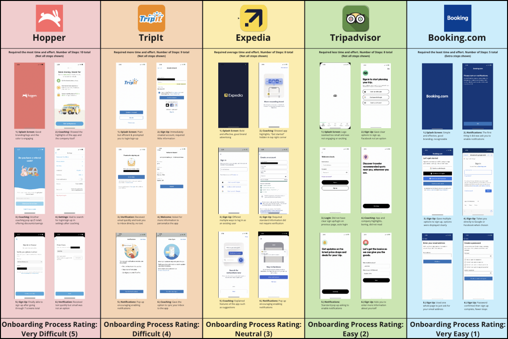
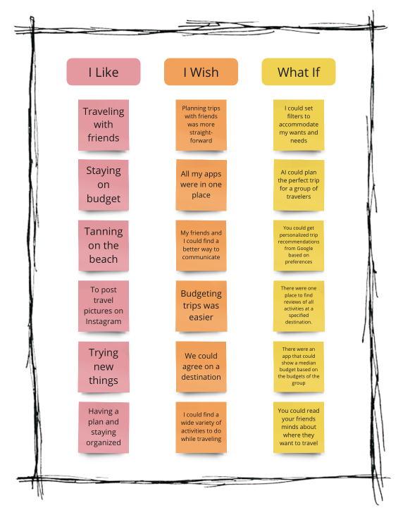
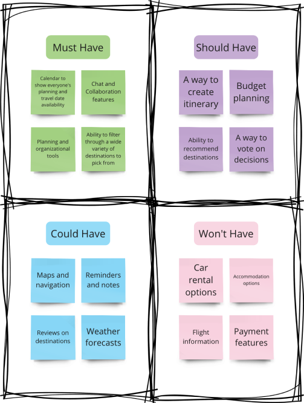
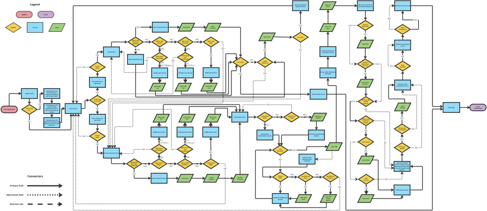
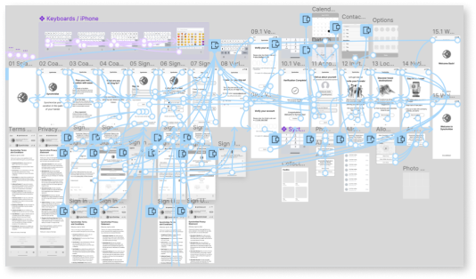
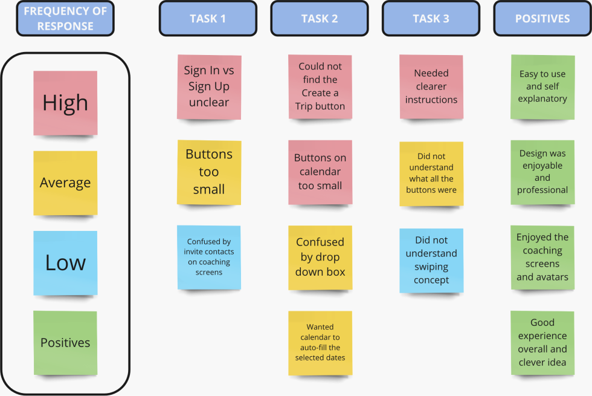
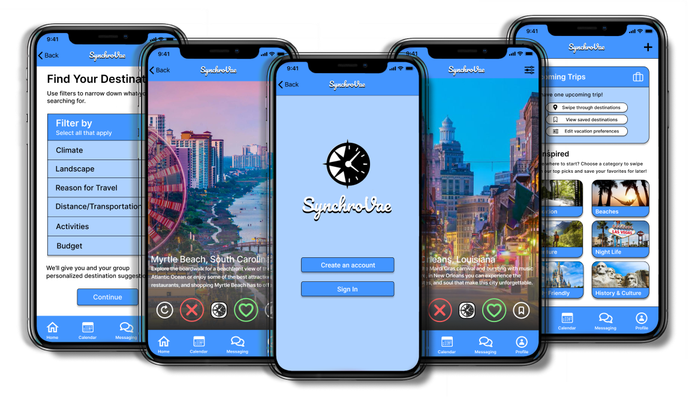

SynchroVae
Travel Planning App Case Study

SynchroVae
Travel Planning App Case Study
Mobile Travel Planning App Case Study
UX/
UI Design Challenge
Project Overview
Envision a mobile app built for the modern traveler to plan their next adventure. Research, design, build, and test a travel app for iOS. Conduct research in order to understand the pain points users face when travel planning then identify a challenge that users face when planning a trip and design a solution for the optimal user experience.
Problem
Planning a trip as a group can be frustrating and time-consuming. A large amount of coordination & organization are required and it is difficult for travelers to agree on an itinerary that accounts for everyone’s preferences.
Solution
Conduct research to understand the main pain points that are faced when planning trips with others and create an app that will alleviate these challenges by helping travelers with communication, planning, and decision making.
Project Type
Timeline
My Roles
Platform
Tools Used
1
2
3
4
5
6
7
1
2
3
4
5
6
7
User Interviews
My partner and I started the research process by conducting user interviews in order to learn more about how travelers communicate and to discover what is the most challenging part of planning a trip with a group.
We surveyed 6 participants total between the ages of 21-28, who travel 3-4 times per year, primarily in a group setting.
We discovered a common theme that most travelers plan trips in person or through text and the hardest part of trip planning was agreeing on a destination primarily based on cost, distance, and climate.


“Texting is more convenient, but I think it’s quicker and easier to plan things in person.”
- Betsy R.
“Destination determines experience. Choosing a destination is about finding a balance between weather, distance, and cost.”
- Katie S.
“I wish there was something that would give me suggestions of where I might like to go.”
- Kayla D.
Affinity Diagram
From my interview insights, I created an affinity diagram to see what my users had in common. Doing this helped me to determine my target audience and also allowed me to see what the biggest pain points are that my users encounter when planning a trip.

Further Analysis
In addition to interviews, I also conducted a survey in order to gain more quantitative data relating to how travelers plan trips in a group setting and what pain points they experience.
What is the biggest challenge when planning a trip with a group?
When planning a trip, I found most travelers struggle with communication & planning. However, the biggest challenge was agreeing on a destination.


What is the biggest factor when deciding on a travel destination?
When choosing a destination, research showed that the biggest deciding factor for travelers was climate, which was then closely followed by cost.
What is your preffered method of communication when trip planning?
When communicating travel plans with others, results showed most travelers preffered method of communication was texting or in-person.

Competitor Analysis
Performing a competitor analysis allowed me to learn the ins and outs of how my competition opperates and identify their strengths and weaknesses. This helped me to keep up with trends and guarantee that my product meets or exceeds industry standards and expectations.
1
2
3
4
5
6
7
Personas
Before conducting my research, I created a proto persona based off my assumptions of who my users are. After analyzing my data, I used my results to create a user persona based off the information I gathered from my research.
Proto Persona

User Persona

Empathy Map
To further empathize and get a better understanding of my target audience, I created an empathy map imagining what my users might say, do, think, and feel. By recognizing the biggest pain points and prioritizing their needs, I was able to create gains for my users by visualizing potential solutions to the challenges they face when planning a trip.

1
2
3
4
5
6
7
User Insight Statement
Travelers often find it challenging to communicate plans, align schedules, and choose a location when planning a trip with a group. I believe I might be able to help by assisting travelers with communication and decision making by creating an app that can show users destinations and allow groups to vote and filter through locations helping them to communicate ideas and align schedules. Doing this will allow our product to alleviate the stress of group travel planning.
How Might We
How might we assist travelers so that our users are successful based on the following measurable criteria.
Problem Statement
My travel app was designed to achieve an easy way to collaborate with others when planning a trip by assisting with organization, communication, and the challenge of deciding between multiple destinations.
I Like, I Wish, What If
How Might We
1
2
3
4
5
6
7
Journey Map
Value Proposition
Storyboard
User Scenario

1
2
3
4
5
6
7
User Flow
I first created a detailed user flow to layout my navigation and show the structure of how pages are prioritized, linked, & labeled. By mapping out this experience I got an idea of how users would move through the app. I gained a deeper understanding of user decisions, enabling me to strategize and prioritize elements required for the optimal user experience. This approach helped me to create an efficient interface design that meet user’s needs by streamlining their journey and guaranteeing a positive outcome.
Sketches
The design process proceeded with paper wireframe sketches in order to get a clearer vision of content and information layout across various screens. This allowed me to explore possibilities, easily make iterations, refine my design, evaluate the composition, and ensure the final screens combine the best elements for the best user experience.

Digital Wireframes
Wireframes were created with minimal color usage in order to prioritize user experience, maximize usability, & functionality.

Clickable Prototype
For testing purposes, I adapted my wireframes into a digital low-fidelity prototype to be introduced to potential users.
1
2
3
4
5
6
7
Guerrille User Testing
To discover any usability issues, I presented my app to the public for the first time for testing to get valuable feedback. During these tests, I asked my participants to complete three tasks, requesting they think aloud & describe what they’re doing, seeing, and thinking during their experience while using the app. The scenarios given for users to complete are as follows:
Scenario 1
You just downloaded SynchroVae and you want to personalize your account. Please create an account and select an avatar for your profile picture.
Scenario 2
Now that you have your account set up, you need to plan a trip with your friends. Navigate to the home screen to create and customize a new trip.
Scenario 3
You need to agree on a destination with your friends. Please begin swiping through locations to get synchronized and see what your friends like.
Test Results Analysis
After conducting user testing, I analyzed the results to see where my prototype met expectations and where it fell short and could be improved. All participants were able to complete all three tasks. Overall, the feedback was positive with only a few comments and suggestions pertaining to the sign up screen, button size, location of elements, and a request for instructions.
Iterations and Additional Elements
Once user testing was completed, iterations were made and incorporated into the iOS mockups. Using the feedback I got from the tests, I increased the size of the buttons, added a sign in/create account screen, added a tutorial for the swiping feature, and continued to add more elements to develop my app, make it more user friendly, and create the best user experience.


1
2
3
4
5
6
7
Final Prototype
After iterations were made and the functionality of my new app was proven successful, I put the finishing touches on my design by adding color, icons, and images. This created a more engaging and visually appealing interface.

Key Takeaways
I thoroughly enjoyed this project and with the help of my instructor and my peers, I was able to create something I am proud of. From this project, I learned how important research is in the design process. Not only user research, but competitor research as well. I found that the information I gained from users and competitors helped me improve my app & make it something that would work efficiently & people would use. I noticed how users tend to have common pain points & there are many similarities between competitors as well. Getting feedback was crucial to this process in order to improve my app and see things that I wouldn’t have myself. Lastly, I learned to expect change, change is good. Change means improvement & with every iteration my app got better.
SynchroVae
